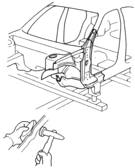
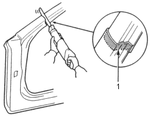
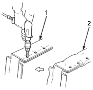
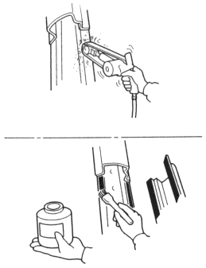

- Straighten any damaged parts.
|
To prevent eye injury and burns when welding, wear an approved welding helmet, gloves and safety shoes. |
 WARNING
WARNING- Fill any holes by MIG welding and even out with a hammer and dolly.
|
To prevent eye injury, wear goggles or safety glasses whenever sanding, cutting or grinding. |
- Level and finish the burns on the welding flanges with a disc sander or belt sander.

- Preparations of new parts.
- Cut the new outer panel so it will overlap by 20-30mm (0.8-1.2 in.) to the panel of the body side.

- OVERLAP
- Where new panels cannot be spot welded, make holes for plug welding.
- Make holes to the size which corresponds to the thickness of the welded plate (see page 2-19).
- The position and the point by which holes are made, refer to the old parts or Mass Production Body Welding Diagram (see section 3).

- NEW PART
- OLD PART
- Apply rust prevention processing on welded surface.
|
To prevent eye injury, wear goggles of safety glasses whenever sanding. |
- Remove the undercoat from both sides of the areas to be spot welded with a sander to expose the steel plate.
- Apply the spot sealer to the welding surface of the new parts and body side.
NOTE: Spread the spot sealer coat on the welding surface so that there is no bare areas.
